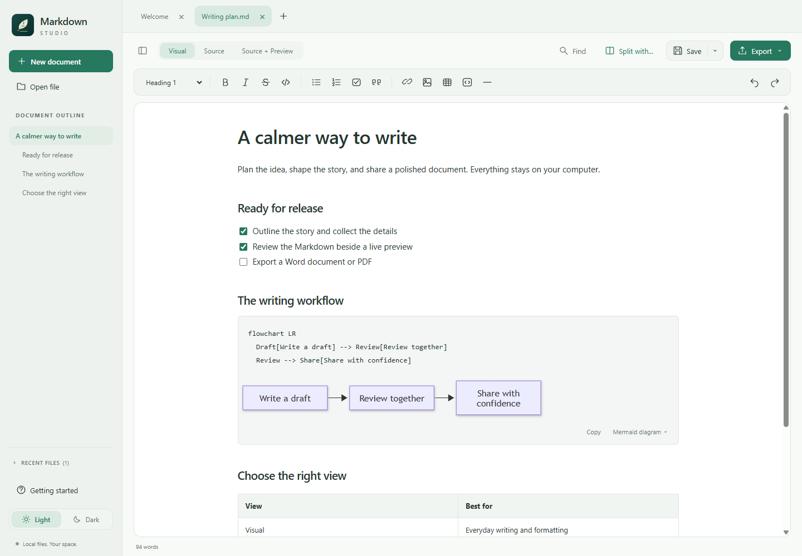

Choose your view
Use Visual for formatted writing, Source for exact Markdown, or Source + Preview for editable text beside a read-only live rendering. Pair two documents when you need a reference.
Free & open source Windows 10 & 11
Meet Markdown Studio, my free Markdown editor for Windows. Write visually, work in source, or keep a live preview beside your draft. Your files stay yours.
Version 0.6.0 · x64 MSI · No account needed
This installer is unsigned. Windows or your browser may show a warning. Read before installing.

Local-first. No document uploads.
Just install. Runtime included.
Open by design. MIT licensed.
Less friction. More writing.
Notes, technical guides, release plans, or a README. Keep the flexibility of Markdown without giving up a comfortable writing space.
Use Visual for formatted writing, Source for exact Markdown, or Source + Preview for editable text beside a read-only live rendering. Pair two documents when you need a reference.
Turn supported Mermaid blocks into flowcharts, sequence diagrams, and more. Rendering happens locally, with no external diagram service. Supported diagrams also export to Word and PDF.
Export the active draft, including unsaved edits, supported images, code highlighting, and diagrams. No Microsoft Word or Pandoc installation required.
Navigate matches and replace one or all. Match case, search whole words, or use regular expressions with capture-group replacements. Source highlights show what you are changing.
Add tables, task lists, code blocks, and a refreshable table of contents. Embed images or keep them in a relative assets folder alongside a saved document.
Light and Dark themes, a heading outline, Focus mode, multiple tabs, and a resizable sidebar. Unsaved-change prompts and recovery drafts help protect work; recovery is not a backup.
Make yourself at home
Actual screenshots from version 0.6.0, using sample documents.


A small workflow, not a platform
Create a document or open an existing Markdown file. Choose Visual, Source, or Source + Preview. No account or cloud workspace to set up.
Add headings, tables, code, and tasks. Insert a table of contents and refresh it after changing headings. Use a fenced mermaid block for a supported diagram.
Save your Markdown, or export the active document to Word/PDF. Export creates a separate file; it does not save the Markdown. Share the assets folder too if you chose relative images.
Switching between Visual and Source resets that tab's undo history. Source + Preview shares Source history. Read the full user guide
Ready when you are
Markdown Studio 0.6.0 for Windows 10/11, x64. Free to use, modify, and fork under the MIT license.
Download Windows installerA few useful answers
Yes. It is open-source Markdown software under the MIT license, with no subscription or account requirement. You can use, modify, and redistribute it under the license terms.
Yes. Editing, supported Mermaid rendering, and Word/PDF export work locally. The app has no document uploads, cloud sync, or analytics. Remote images are not downloaded, and opening an external web or email link requires confirmation. Downloads and this GitHub-hosted website require an internet connection.
Yes. Use Export for the active document. Supported images, highlighted code, and supported Mermaid diagrams are included. Unsupported syntax or diagram features may not render; keep Source mode for exact Markdown and consult the user guide for limits.
No. Markdown Studio is provided as-is, without support, warranty, or promised maintenance. Independent forks are welcome, including AI-assisted forks. Read the support policy and MIT license.
This site adds no analytics, advertising, cookies, external fonts, or third-party scripts. GitHub hosts the site and processes requests according to the GitHub Privacy Statement.